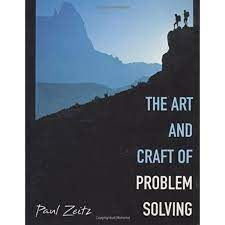

Project

I have been conducting small experiemnts for a very long time now and these experiments have shaped up a lot of my experiences. I can only list some of the experiments I did when small and things worked on.
Worked on making a chalk dispenser, an electro-mechanical set up that had a pulley like system to dispense out one chalk at a time and a plate placed over a sensetive paper spring that made the led light up every time it happened.
Made a lot of flash based games, animations and distributed them around, burned them on RW CDs and just gave them to my neighbour to try
Learnt comic sketching and kept distributing small picturised novellas again to the neighbourhood around for many years :)
Got engrossed in research based on number theory and combinatorial maths and tried solving Fermat's last conjecture using rigorous number theory. Then I read about Dr Andrew Wiles work, after 6 months of working on it with limited mathematical knowledge, it was tough to give up!
The usual repair businesses with computer hardwares every child does and trying to fit in parts and search for replacables
Considerable time trying to decipher on works of people like Paul erdos, and the genesis of problem solving, influened heavily by the art and craft of problem solving by Paul Zeitz. Some nights spent just trying to load books on archive.org, the yellowed pages ones on kbps speeds!
Enjoyed reading biographies and countign from then have read more than 92 biographies to read them more as books of problem solving than narrative story
Quirky experiemnts with physics, and a deep interest in cosmology in calsss 8 and 9 starting with a brief history of time by professor Hawkins, I later shifted the focus to combinatorics, the fun part of mathematics whose strategies are still useful
Working to solve and prove that all shapes can be built using traiangles for over a year in grade 6.Funny thing but kept engaged for a long time to experiment with trying to construct weird shapes in my head and discuss with friends
As a small student in class 5, gave a grade sheet maker kind of thing built on excel to the computer lab much to the fun of the teachers there :)
Opened a very small library for the colony kids in class 4 just for the fun of trying to manage one and promptly numbered all the comic books referenced to a a small rough notebook for the entirity of summer
I have always been like this, conducting experiments just for the sake of it! I am losing track of most of the experiments conducted then with fun classmates all along! TVery thankful for the experiences to them all!